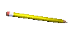
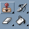

<!DOCTYPE html>
<html lang='en'>
<head>
	<title>Ben's Website!!!</title>
	<link rel='icon' type='image/x-icon' href='../ico/favicon.ico'>
	<style type="text/css">
		body {
			background-image: url(../gif/stars2.gif);
			color: white;
			font-family: "Lucida Console", monospace;
			margin: 0;
			height: 100%;
			text-align: center;
		}
		
		#header:hover { filter: drop-shadow(0 0 0.8rem rgb(255, 0, 0)) }

		#artScreen { height: 700px; }

		h1 { text-shadow : 0 0 40px red; }
		
		.tab img { width: 90px; }

		a:link, a:visited {
			color: pink;
			text-decoration: none;
		}

		.button, a { cursor: url(../shared/cursor.png), auto; }

		.caption { display: block; }

		#home { :hover { filter: drop-shadow(0 0 2rem rgb(255, 255, 255)) }}
	</style>
</head>
	
<body>
	<br>
	<a href="../index.html?art" id="home"></a>
	<div>
		<h1 style="color: purple;" id="title"><h1>
		<div></div>
		<div>
			
			
			
		</div>
		<!-- <div id="tabMenu">
			<div class="tab">
				
			</div>
			<div class="tab">
					
			</div>
			<div class="tab">
				
			</div>
			<div class="tab" >
				
			</div>
			<div class="tab">
				
			</div>
		</div> -->
	</div>
	<script src="../shared/shared.js"></script>
	<script src="photos.js"></script>
	<script>
		let allImages = {
			"paintings": [
				"BottleAndGoblet.jpg",
				"Chantarelle.jpg",
				"Pomegranate.JPG",
				"McKinley.JPG",
				"Renaissance.JPG",
				"SelfPortrait.jpg",
				"SkullPainting.JPG",
				"TurkeyVulture.png",
				"WineAndOnion.jpg"
			],
			"drawings": [
				"Artichoke.JPG",
				"CherryTree.jpg",
				"LivingRoom.JPG",
				"Parents.JPG",
				"Popcorn.JPG",
				"Sanjay.JPG",
				"Skull.JPG",
				"Sunflowers.JPG"
			],
			"uw-daily-illustrations": [
				"420.jpg",
				"Hillary.jpg",
				"Stars.jpg",
				"aderall.jpg",
				"aggression.jpg",
				"apartment.jpg",
				"bezos.jpg",
				"big data.jpg",
				"bikini.jpg",
				"bird and bee.jpg",
				"bob hasegawa.JPG",
				"breathe.jpg",
				"bring them to heel.jpg",
				"budget.jpg",
				"cary moon.jpg",
				"cat.jpg",
				"chronic pain.jpg",
				"class.jpg",
				"coddled.jpg",
				"condon.jpg",
				"cross.jpg",
				"crowded uw.jpg",
				"dragon.jpg",
				"dropout.jpg",
				"eating disorder.JPG",
				"education.jpg",
				"election feelings.jpg",
				"environment.jpg",
				"excel.jpg",
				"feminist ad color 2.jpg",
				"fish.jpg",
				"frats.jpg",
				"ghosts.jpg",
				"good place.jpg",
				"hanging.jpg",
				"ice.jpg",
				"jenny durkin.JPG",
				"jessyn farrell.jpg",
				"lawmaker.jpg",
				"leaves.jpg",
				"mimimum wage color.jpg",
				"monkey.JPG",
				"obamaKim.JPG",
				"online activism.jpg",
				"oxxxford.jpg",
				"palace.jpg",
				"pregnancy.jpg",
				"primate.jpg",
				"pumpkin.jpg",
				"ratings.jpg",
				"restroom.jpg",
				"sex ed.jpg",
				"shoes.JPG",
				"social media.jpg",
				"stem.jpg",
				"stuff.JPG",
				"summer.jpg",
				"tech love bw.jpg",
				"tech vs nature.jpg",
				"thoughts.jpg",
				"to the bone.jpg",
				"trump.jpg",
				"trumpers.jpg",
				"vegetables.jpg",
				"vets.jpg",
				"women in stem 2.jpg"
			],
			"dead-end": [
				"Dark Room 2.PNG",
				"Dead End 3.png",
				"Front Yard 2.png",
				"Kitchen 7.PNG",
				"Living Room 4.PNG",
				"Living Room Plant 1.PNG",
				"Overhead.PNG",
				"Rabbit.PNG",
				"Screen Shot 2013-12-30 at 12.29.37 PM.png",
				"Screen Shot 2014-01-07 at 6.43.06 PM.png",
				"Screen Shot 2014-06-23 at 6.35.27 PM.png",
				"Screen Shot 2014-07-02 at 2.48.27 PM.png",
				"Screen Shot 2014-08-08 at 9.22.40 AM.png",
				"Shed.png",
				"Street 1.png",
				"Yard 5.PNG",
				"graveyard1.JPG",
				"sidepath3.png"
			],
			"miscellaneous": [
				"BusinessSpooner.jpeg",
				"OffallyGood!.jpeg",
				"SovietMonopoly.jpeg",
				"TheActualBeachBoys.jpeg",
				"TrainParking.jpeg",
				"WolfOfWallStreetVHS.jpeg"
			]
		}

		let images, folder, title

		folder = window.location.search.slice(1)
		images = allImages[folder]
		if (window.location.search === "?paintings") { title = "Paintings" }
		else if (window.location.search === "?drawings") { title = "Drawings" } 
		else if (window.location.search === "?photos") {
			title = "Photos"
			get("artScreen").style.width = "700px"
			images = photos } 
		else if (window.location.search === "?uw-daily-illustrations") { title = "UW Daily Illustrations" }
		else if (window.location.search === "?dead-end") { title = "Dead End Test Renders" }
		else if (window.location.search === "?miscellaneous") { title = "Miscellaneous" }

		get("title").innerHTML = title
		let index = 0
		shuffle(images)
		get("left").onclick = () => {
			playSound('../shared/click', .5)
			index = decrement(index, images.length - 1)
			setImage()
		}

		get("right").onclick = () => {
			playSound('../shared/click', .5)
			index = increment(index, images.length - 1)
			setImage()
		}

		get("random").onclick = () => {
			playSound('shared/trill', .5)
			index = random(0, images.length - 1)
			setImage()
		}

		function setImage() { get('artScreen').src = folder + "/" + images[index] }
		
		setImage()
	</script>
</body>
</html>